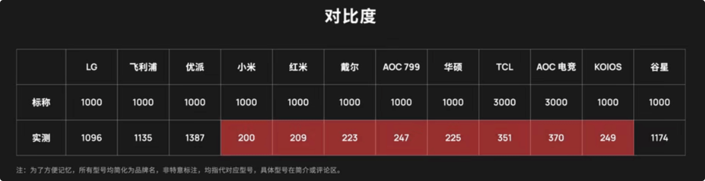

先看评测，再下单！
当我们在千元这个价位段，选购显示器的时候，页面里面通常都是一些无关痛痒的买点，因为它们确实没有什么好吹的。比如不谈显示，吹窄边框，吹全高清的分辨率，说得好像谁不是 1080P 一样，所以我们买东西的时候，不要去看那些便宜的显示器在吹什么，而要看看各项都卖的很贵的显示器在吹什么，比如，亮度、对比度、可视角度、色深、色准、低蓝光以及 HDR。
高色准显示器，从 1k-2k 的价位段就可以开始谈色准了，而 2k-3k 是显示器的主要战场(自带出厂校色)，上各层次的 3k-4k 主要是大品牌出没(专业模式)。这个价位就非常适合，给苹果用户挑几台外接显示器了。
1. 尺寸
要清晰还是大呢 - 合适自己最为重要
所有的科普都告诉我们，『尺吋越大越好，分辨率越高越好』。但是这是一句有用的废话，其实对于实际选购来说，这个问题应该更为具体，就是在预算有限的情况下，我们应该优先选择尺吋还是分辨率。而尺吋和分辨率究竟能够影响什么呢？很多人买大尺吋显示器希望看起来会有更好地视觉冲击力，而且显示更多内容。
从常见的 24 吋升级到 27 吋或 32 吋，虽然只增加了 3 吋和 8 吋，但是实际显示面积分别打了 26% 和 78%。但是在相同的分辨率下，它们显示的内容时完全一样多的，图标和文字只是单纯的等比例放大。只有尺寸增加的同时，物理像素也跟着增加，也就是更高的分辨率才会显示出更多的内容。
但同样反直觉的是，都是 27 吋的显示器，2K 和 4K 的显示内容那个更多呢？答案是一样多，4K 横纵像素数是 2K 分辨率的 1.5 倍，但在 27 吋下，4K 的图标和文字都变得太小了，所以系统默认是将图标和文字放大 1.5 倍，导致分辨率带来的额外显示内容的优势，被系统缩放给抵消了。唯一的区别就是 4K 的分辨率会带来细腻度上的优势。一个好的显示器应该在舒适的距离内看不到像素点，所以按照苹果的视网膜标准，可以算出在不同分辨率的情况下，最为合适的距离到底在哪里。
但比起能够挑到多大的尺寸，你应该更操心的是，你的桌面能够放大多大的显示器尺寸。千万不要相信网上推荐的观看最佳距离尺寸，最好的方式就是买回来自己试试看看，到底合不合适，才是硬道理，毕竟都是有七天无理由退换货的服务，再不济就是多掏一点邮费而已。
2. 亮度
渐渐消失的亮度
亮度和对比度是显示器的基础指标之一，有些厂商的显示器(千元款)并不达标，200nit 意味着你把显示器放到窗户边的话，你可能什么都看不清了。而标称的 1000:1 到实际的 200:1 意味着这个对比度下屏幕好像蒙上一层灰尘，更看不清了。但是用专业的信号发生器，测量时确实数值都是对的，但是又有谁会用信号发生器当电脑用呢？
但是究其原因，问题到底出现在哪里了呢？驱动板！当你用 HDMI 线连接显示器的时候，显示器的驱动板会告诉你『我是显示器』，但是麻烦的就在于 HDMI 不光显示器用，电视也在用，这些出问题的显示器 HDMI 连接电脑后，驱动板就会告诉电脑『我是台电视』。识别为电视会有什么问题呢？
早期的电视是好在传输和转换的过程中会产生大量的噪音，实际反映在画面上就是噪点，所以电视会把顶部最亮的白色和底部最暗的黑色信号直接砍掉，只保留中间的 16-235，再通过拉伸把信号补全到 0-255。偏差的显示器就是把自己给识别成为了电视，但是又不做电视的工作，结果就是亮度降到了 200nit，对比度直接降到了 200:1。其实，加一个 DP 口就行了，因为 DP 协议定制的比较晚，不用去考虑兼容电视，KOIOS 就可以通过这种方式解决掉。

为什么会存在如此低级的问题呢？因为普通用户根本没有对比，真的很难发现这件事，当你拿到最高亮度只有 200nit 和 对比度 200:1 的总是蒙着一层雾的显示器显示器的时候，你心里唯一能说的就是，这个价位的显示器就是这样子的，将就将就用吧。
3. 色温
五彩斑斓的白
当我们连接 DP 或 HDMI 的时候，调整好正确的设置，消失的亮度和对比度才回来了。但当把很多显示器放到一起的时候，会发现每个显示器显示的白色都不一样，有的发红、有得发蓝、有得发黄，所以可能不是你带了黄色的眼睛导致你看什么都黄，而是你的显示器本来就黄。
显示器和电视不同，大多数使用场景都是白底黑字，所以这个对于我们而言非常的明显。如果你是买回去不调模式直接用的话，这些显示器最低色温是 5100K，最高色温达到 8800K，和互联网通用标准的 6500 还是有明显偏差的。即使把它们调整到各自最准的色温模式，也是会存在差异的。为什么同样价位的显示器(千元)，会有这样的问题呢？
究其原因，就是因为显示器的背光模组造成的，像 LG、友达、京东方这样的面板厂商出厂时，通常都是液晶面板和背光打包在一起出售的，这种背光组合方式就是我们常说的『原厂背光』。采用原厂背光的显示器，因为 LED 供应稳定且出厂有严格的检验，所以不同批次之间颜色差异比较小。而地价显示器中，有的厂家为了节省成本就只会用前面的液晶面板，而背光购买来自第三方，然后自己进行二次封装再出售，这个就称之为『组装背光』。而使用组装背光的显示器厂商，色温表现就完全看产商自己的品控了。
厂商之所以敢在这里省成本，除了背光价格的差异真的很大之外，还因为这点在产品页面中很少被提及，所有的宣传口径都是会引导你去关注最外层的面板而忽略了内部的背光。背光影响的东西有很多，比如可视角度，就是普通用户不用专业仪器就可以肉眼直观感受到的好坏。就像很多科普都会告诉我们一样，『IPS 可视角度好』。
4. 可视角度
受到的影响因素：对比度、白色偏色，色彩劣化
但即使是背光接近、面板也都是 IPS 的显示器，可视角度也是会存在差异的。究其原因，就是在背光和面板之间的膜片。而膜片和可视角度之前的差异，就是一个值得说的地方。背光的灯带被固定在底部朝上的位置，向上打光的。第一层导光板让线光源变成了面光源，这个时候其实亮度很高，有 1000nit，而经过中间的膜片和液晶面板的层层衰减，最终两度只剩到了区区的 100mit，所以你看到的亮度每一尼特的提升，背光的成本都会是成倍的攀升。
而 100mit 肯定是不够用的，但一味的提高灯珠的数量显然也是不现实的，因为诞生出了一种新的膜片，即增亮膜。增亮膜的原理就是聚拢，它并没有产生光，而是把周围的光聚集到了中间，所以效果非常好。一个 1000nit 的背光，增加了一个增亮膜可以达到 1600nit 的输出，而第二层之后可以达到 2300nit，第三层可以达到 3300nit。但增亮膜的本质就是利用了其它角度的光线，只要用到了增亮膜，可视角度就会受影响，但是好的增亮膜影响就会小一点。
但有意思的是，不管什么显示器，不管什么面板产品页里，关于可视角度那一栏都是 187°。为什么是 187° 呢？因为转到 180° 就真的啥都看不见了。厂家定义的可视角度就是对比度大于等于 10。除了对比度，颜色其实也会偏差，事实上可视角度的评价在行业内一直都是一个难题。
5. 闪烁
被忽略的闪烁
商品页面里还经常提及的一个词就是 bit，比如 8bit 和 10bit 面板的显示器。bit 和色阶有关系，数量越大，颜色之间过渡就越顺滑。
6bit=262144种颜色8bit=16777216种颜色
但是，6bit 和 8bit 的显示器基本看不出来色阶的存在，这是因为 6bit 显示器通过一种算法，实现了近似 8bit 的显示效果，这就是我们常常看到的『抖动算法』，即 6 抖 8 之类的。但是这种抖动算法，由于抖动频率不够高就会有很明显的闪烁，出现闪烁现象，所以抖动算法也有好与坏之分。
这时需要注意的就是，很多商品详情页面，把 6 抖 8 直接叫成 8bit 进行宣传，而真的 8bit 只能宣传称为 10bit 了。整个行业都是这样，逐渐的你就看不到 6bit 显示器了。厂商之所以敢这么宣传，就是欺负我们普通消费者不懂、不熟悉。
6. 低蓝光
低蓝光 = 加钱
但还有一个你觉得你可能懂，很熟悉，其实也是一个坑，那就是低蓝光。低蓝光手机上，我们见得比较多了，安卓的护眼模式和苹果的夜览，那这些显示器的低蓝光模式是怎么做的呢？大多数显示器开启低蓝光模式之后，蓝光都有 30% 左右的下降，看起来还是挺有效的。但是红绿不变+蓝色减少，根据混色原理告诉我们，屏幕会发黄。
说百了，这些显示器大力宣传的低蓝光，就是把你的 RGB 通道里的蓝色往下调了调而已，其实所有显示器都是可以做到的。所以，低蓝光就是智商税，不要额外再花冤枉钱了。
7. 色域
购买广色域显示器的话需要带色域限缩 - 高色准
只要沾上广色域，就意味着背光成本的增加，显示器的价格就不会太便宜。色域其实就是显示器能够显示出来所有颜色的范围集合，通常是赶不上人眼的范围的，所以我们人为地划定出了几个常见色域范围。比如，最基本的 sRGB，以及广色域标准的 P3/Adobe RGB 等等，它们涵盖的色彩一个比一个多，价格自然也一个比一个贵了。
那么我们需不需要广色域呢？如果你心里面但凡想过这个问题的话，说明你既不是来自印刷行业也不是来自电影行业，那你大概率是不需要广色域的。也许你新买的相机支持 Adobe RGB 色域，新买的手机支持 P3 色域，但其实只要你的照片、视频是要发布到互联网的话，根本没有必要再色域上面多花钱，因为整个互联网的流媒体几乎都是 sRGB 的。除了苹果用户，因为苹果从手机、平板、电脑都已经全线普及了 Display P3 色域的屏幕。但是想要看互联网信息的话，苹果设备也要老老实实显示 sRGB 的色彩。比如，我们需要给苹果电脑外接一块显示器的话，一起显示，可以同一观感，则需要选择一个支持 P3 的显示器最为合适。
行业发展到今天，现在的显示器，完全可以显示 sRGB 的色域覆盖，且往往是更上一层楼。正因为太大了，这些显示器反而无法正常显示出 sRGB 了。因为很多现实能够显示出最鲜艳的的红绿蓝可能比 sRGB 的范围更大，如果不做处理就会导致当你想显示 sRGB 这个小三角最鲜艳的绿色时，显示器就显示了它能显示的最鲜艳的绿，导致颜色过饱和和不准确。所以这些广色域的显示器，需要对超出 sRGB 的色域进行限缩，而限缩会导致缩小之后的色域覆盖很难保证 100% 的覆盖 sRGB，但是对应平常使用来说影响不大。
8. 色准
Delta E 使我们选择显示器非常重要的参数 - 白点+RGP 平衡+伽马
色准，字面意思很好理解，就是颜色的准确度。但是提到色准，可能 △E 就是绕不开的问题，其实 △E 就是实际显示的颜色和目标颜色的坐标差，其是一个长度单位，越小越好。现在标准，就是 △E 小于 2 就可以了，这样几乎感知不到差异。
既然色准这个数据这么好用，是不是可以直接闭着眼睛买 △E 小于 2 的显示器就好了呢？并不是，五彩斑斓的白。之前，我们提到色温的时候，把其归结到了色温偏离大，但这次高端显示器的色温都控制的非常好，所以可以排除了这个问题，那为什么白色还是不一样呢？
我们谈色温，其实色温是这样一个曲线，它表示的是这样一个物体(绝对黑体)加热到不同温度时发出的光的颜色。比如加热到 6504K 就是我们通常说的那个白，但是按照色温的算法，在 6504K 线上所有的点其实色温都是 6504K。所以同样的色温，可以发绿，也可以发紫。所以下次你再碰到新买的手机，屏幕偏绿或者偏黄，商家让你调色温去解决的时候，你直接告诉他，你这是白点不准，别谈什么色温。
因此用色温描述白色并不准确，因为 6504K 的白本质是一个点，要真正看白色准不准，我们应该把白色做一个有坐标的颜色，去计算显示器显示的白色和白点之间的距离，就是前面说过的那个 △E(白点色差小于三都不错)。但是如果你是组合两台显示器的话，尽量选择相同品牌、同一型号、同一批次相近的显示器，这样一致性会更好一点。因为单纯地选择两台白点色差小于三点的显示器，可能你足够幸运，这两个颜色正好相反的方向，这就变成了六。
按理说，两个 色准得小+白点得准 的显示器应该显示效果就一样了，但是发现还是不一样？一个偏红，一个偏绿。色准和白点数据好，意味着显示器底子是好的，但是色彩很复杂，它不是我们看到的平面二维，而是一个三维空间，高度其实就是亮度。白色在高，黑色在低，中间过渡的就是灰色也必须由红绿蓝组合出来，这样就会造成不一样，这个就是『RGB 平衡』。
现在我们有个色域、色准、白点、RGB 平衡，是不是就可以帮助我们挑出来一个追准确的显示器呢？别急，统一照照片，多个显示器显示器出来的效果不一样，这时我们就需要知道伽马是什么了。
伽马，就是一条决定画面明暗关系的调解曲线。同一张照片，伽马不同导致显示的也不同，可以看到越高画面看起来越浓郁，对比度越高也更暗一些。如果显示器默认的这个根曲线天然就不准，这个影响就很大了。我们在调节显示器显示描述文件的时候，其实调节的就是这个伽马值。
9. 刷新率
还是要和自己的硬件实际需要匹配上才行
作为一个普通消费者来说，选购显示器确实是个比较麻烦的事。目前 1080P 在国内这个网络环境里确实够用而且一般很少超出日常范围，当然这里的一般是排除了游戏党。办公和日常刷刷网页看个在线视频，1080P 确实够了。毕竟在线片源质量拉胯。
其次就是，显示器的高刷，比较熟悉就是 90HZ、120HZ、144HZ 和 165HZ。当然买刷新率越高的显示器越好，但是需要注意的是，你的机器硬件是否支持高刷显示器呢？如果你买 2K 144HZ，显卡能不能带的动 144HZ。不能的话，你就可能需要考虑下 1080P 144HZ。
下来就是，显示器的尺吋，比较熟悉就是 24 吋、27 吋 和 32 吋。电视可能说越大越好，但是这个说法放到显示器很多人反而不赞同。毕竟观看距离显示器要更近，更大的显示器他们会觉得看得好累。因为我不太喜欢使用笔记本自带的显示器，因为太小了，总感觉很别扭，所以一直都是会外接显示器使用。之前我认为，两个 24 吋的显示就刚刚好。但是，后来当我买了一个新的 27 吋 4K 的显示器，我就感觉我心中理想的就是 两个 27 吋 4K 高刷带快充电的显示器 组合为好。
10. 总结陈述
总结一下，在选购显示器的时候，我们都应该从自己的实际需求出发！
显示器是一个仍然飞速进步的行业，但是厂商在大量看不到的地方都在节省成本，这个行业并不是在不听的追逐显示器、显示技术的上限，而是在不断试探消费者的下限。在海量的机型前面，消费者没有办法对比和体验，这个行业不像我们熟悉的竞争充分的手机行业。显示器行业是，谁在背光跟直接上偷工减料，谁就能够活下来，最终就是略币驱逐良币。
在没有垄断的情况下，市场越大也就越乱，无序竞争损害的是厂商与消费者双方的利益，但信息不对称使我们迫切需要知道市场中的劣币和良币。但是，略币驱逐良币并不是所有行业的宿命。当这个行业最够透明，谁是真正的好产品的时候，谁就会留下来，而劣质的产品自然而然就会被淘汰。
最后，需要注意的是，如果你选择购买小厂的显示器的话，就要承担同价位越级参数的同时更需去注意做工和售后，毕竟风险和机遇并存。
11. 参考链接
送人玫瑰，手有余香！